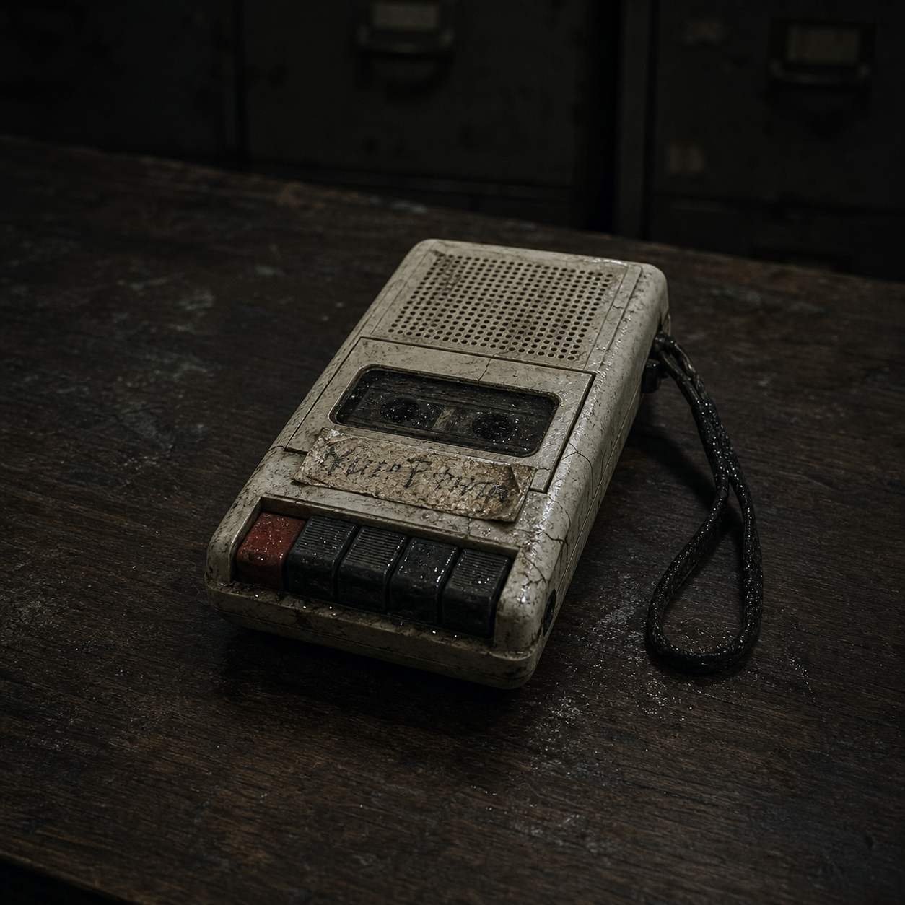
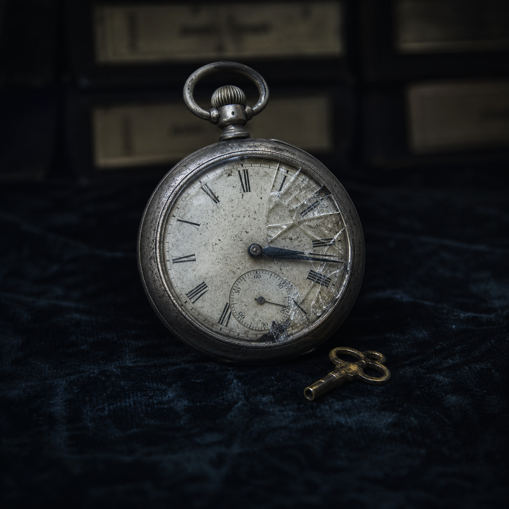
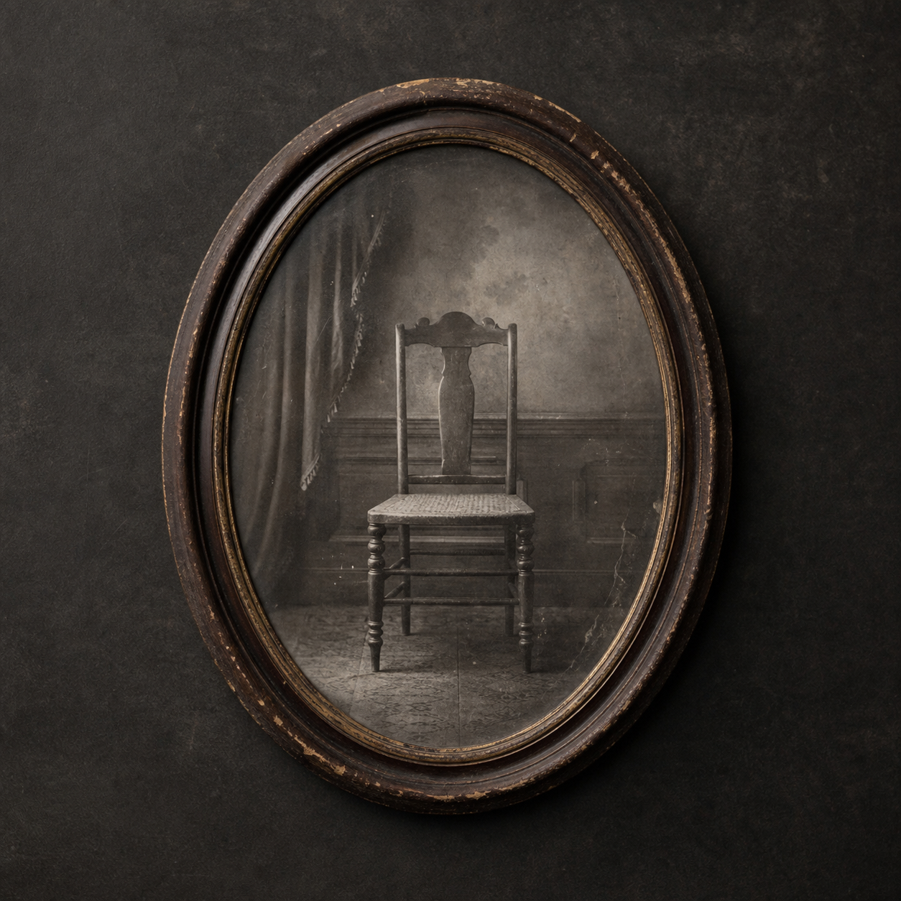
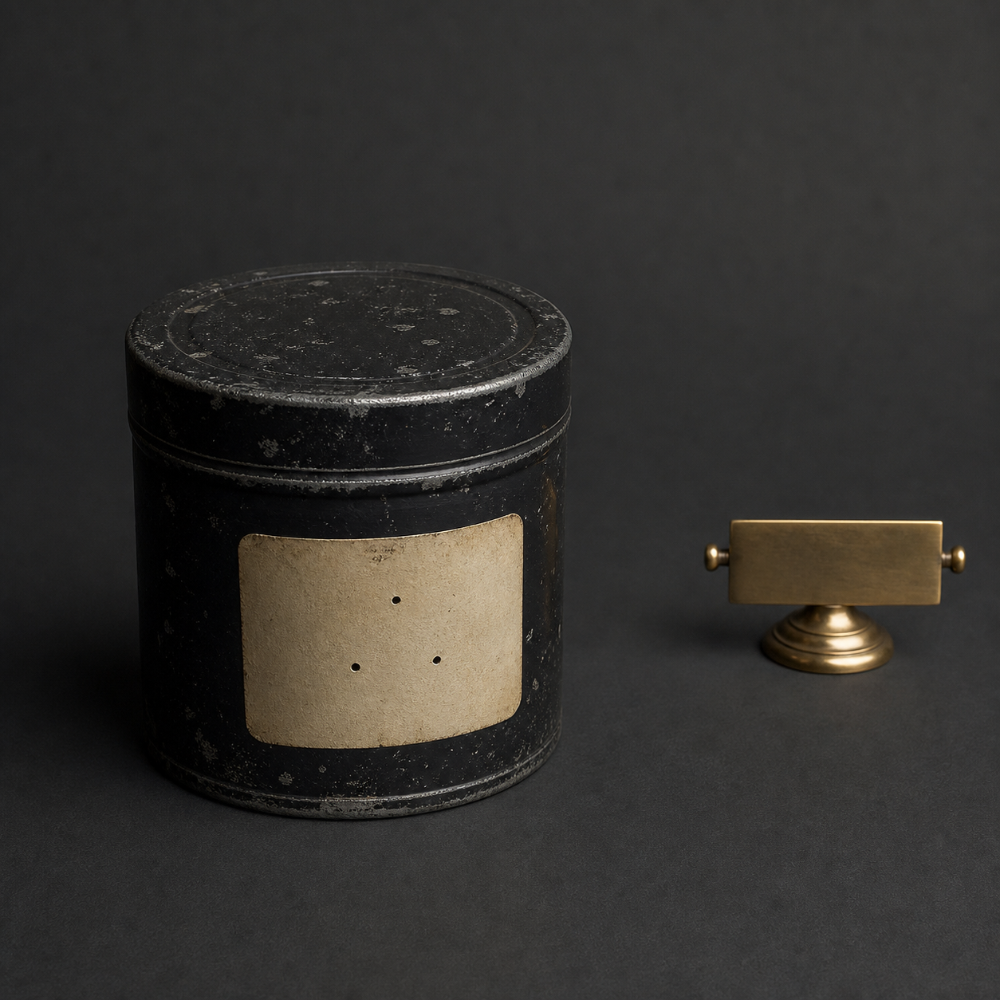
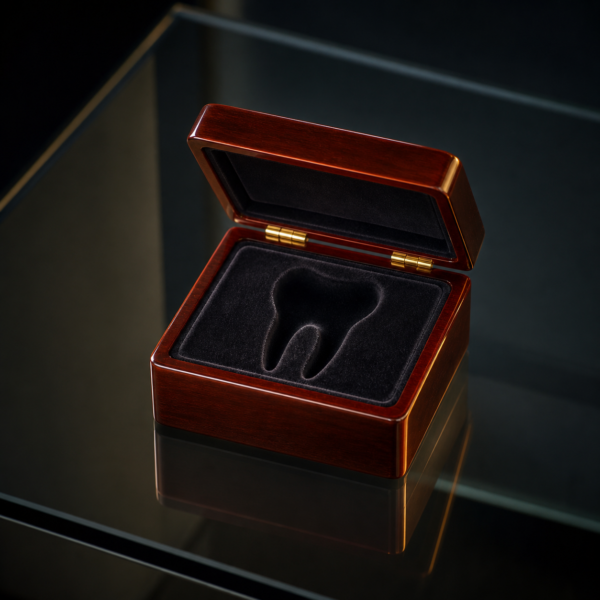

由来の確かな美術工芸から、記録上は存在しない保管物まで。影札は、次の所有者を選ぶためのプライベート・オークションです。



湾岸倉庫で封印されていた器物22点。下見会では、来場者一名につき17分の閲覧時間が設定されています。
差出人欄のない書簡と未刊行日記。
目録の公開には本人確認が必要です。
一度落札され、受取人不明として戻された六点。価格は公開されません。

「現像後の映像は、撮影前から保管庫に存在していた」
LOT 0711の鑑定記録には、存在しない日付と、まだ建てられていない施設の管理印が残されています。
公開競売に適さない来歴、受取人が指定された品、過去に返却された保管物。資格照合済みの会員に限り、個別交渉を受け付けます。
